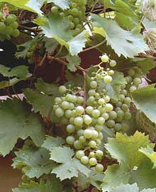

Ayuntamiento de Senés
JARDIN BOTANICO DE ESPECIES AUTOCTONAS DE SENES

Vitis vinifera

La parra (Vitis vinifera) es una planta trepadora leñosa muy característica de la región mediterránea, ampliamente cultivada por su fruto, la uva. Se trata de una especie de gran importancia agrícola, cultural y paisajística.
Presenta tallos largos y flexibles que se desarrollan mediante zarcillos, permitiéndole trepar y extenderse sobre estructuras o árboles. Sus hojas son grandes, lobuladas y de color verde, mientras que sus frutos aparecen en racimos y varían en color y tamaño según la variedad.
La parra es originaria de la región mediterránea y del suroeste de Asia, donde ha sido cultivada desde la antigüedad. Se adapta bien a climas templados con veranos secos y soleados.
En la Sierra de los Filabres y en zonas como Senés, ha sido una planta tradicional en huertos y campos, formando parte del paisaje agrícola.
La parra es conocida por sus frutos, las uvas, que poseen propiedades nutritivas y antioxidantes. Son ricas en azúcares naturales, vitaminas y compuestos beneficiosos para la salud.
Además, de la uva se obtienen productos como el vino, el mosto o las pasas, con gran importancia cultural y económica.
La parra simboliza la abundancia, la fertilidad y la prosperidad. A lo largo de la historia, ha estado asociada a la cultura del vino y a celebraciones tradicionales.
También representa el vínculo entre el ser humano y la tierra, debido a su larga tradición de cultivo.
En Senés, la parra ha sido una planta fundamental en la agricultura tradicional. Se cultivaba para obtener uvas, que se consumían frescas o se utilizaban para elaborar vino y pasas.
También se utilizaba para proporcionar sombra en patios y huertos, creando espacios frescos durante los meses más calurosos.
La parra florece en primavera, con flores pequeñas y poco vistosas. Posteriormente, durante el verano, se desarrollan los racimos de uvas que maduran a finales de esta estación o en otoño.
La parra es una de las plantas cultivadas más antiguas del mundo, con una historia que se remonta a miles de años.
Existen miles de variedades de uva, utilizadas tanto para consumo directo como para la elaboración de vino y otros productos derivados.